10 Extension Wajib Visual Studio Code
Buat temen temen yang belum install
Visual Studio Code
Temen temen bisa instal dulu melalui alamat website ini Text
editor ini bisa digunakan untuk berbagai sistem operasi ya.
Untuk menginstal extension nya temen temen bisa ke sebelah
kiri bagian side bar. nanti disini kita bisa mencari dan
mendownload extension, tapi pastikan temen temen terkoneksi
ke internet dulu.
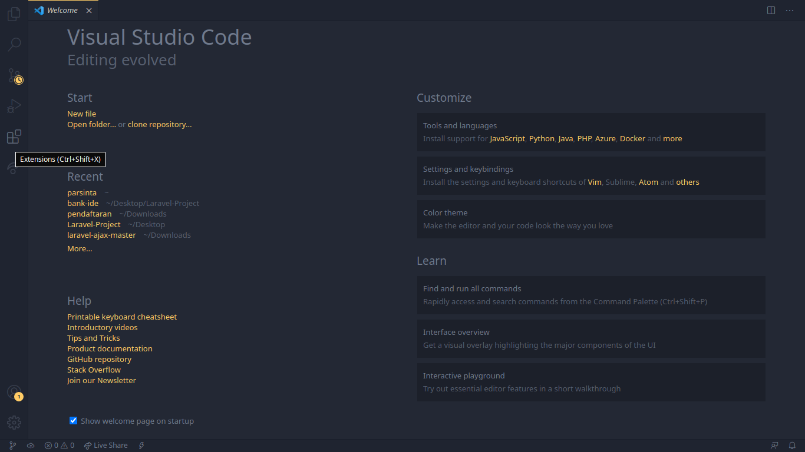
1. Sublime Text Keymap =>extension ini sangat
bermanfaat kalo kalian sebelumnya pengguna sublime text,
kalian sudah hafal misalnya sortcut-sortcut nya, nah ketika
berpindah ke visual studio code kalian masih bisa
menggunakan sortcut punya nya sublime.
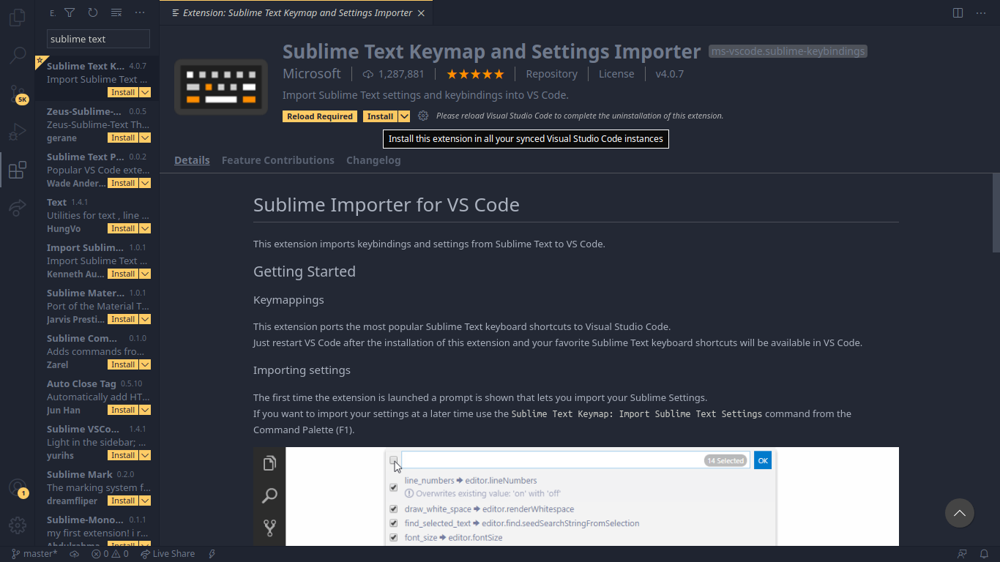
2. open in browser => extension ini juga
merupakan extension yang mengadopsi fitur dari sublime text.
kalo kita membuat file html di sublime text, untuk
menampilkannya kita cukup
klik kanan open in browser.
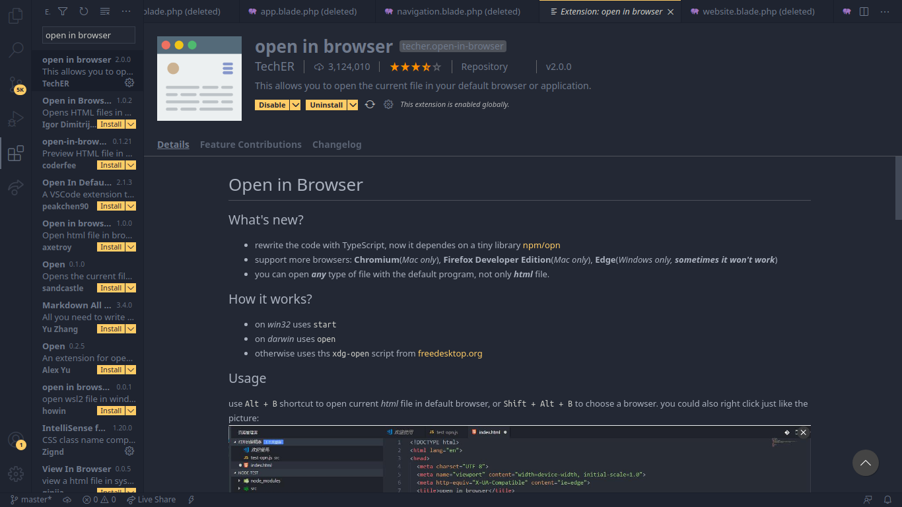
3. Live Share => ini adalah extension yang
lebih keren lagi. Extension ini ngga hanya menampilkan
website temen temen dengan mudah. begitu temen temen save
website nya berubah. hampir sama dengan open in browser tapi
dia live, sudah otomatis live tanpa di refresh, karna
menampilkannya di web server lokal vs code punya nya temen
temen.
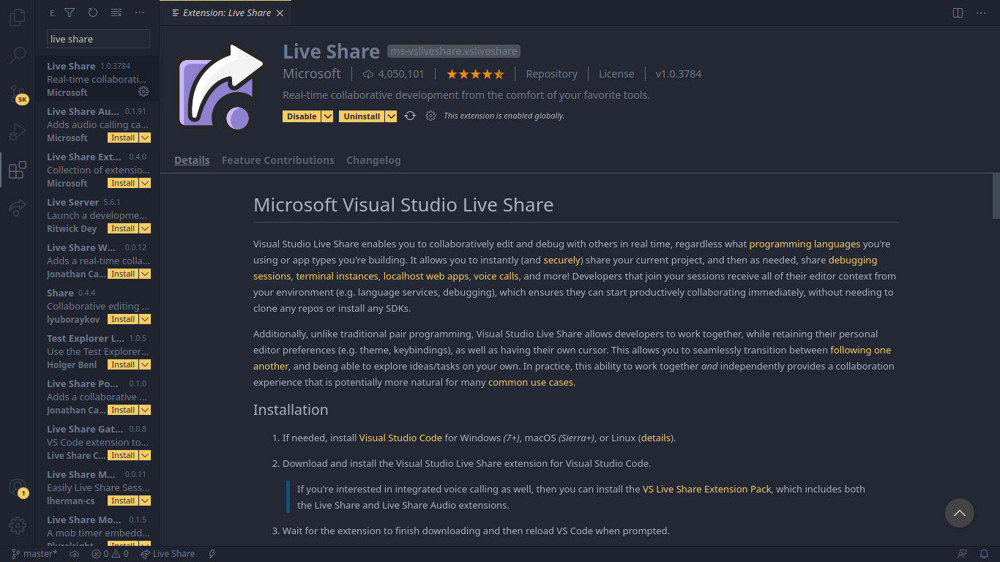
4. Auto Rename Tag => extension ini membantu
ketika temen temen ingin mengganti sebuah tag, temen temen
ngga perlu mengganti tag pembuka dan penutupnya cukup tag
pembuka nya saja, nanti otomatis penutup nya juga akan
diganti.
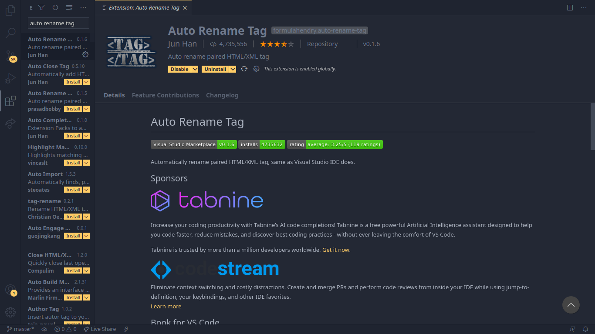
5. IntelliSense for CSS class names in HTML
=> extension ini berguna banget buat web designer juga ya,
apalagi temen temen bekerja dengan framework bootstrap, kan
banyak banget class classnya, memudahkan kita melihat ada
class apa saja di dalam file css yang sudah kita panggil.
Maka akan ada pilihan nya, kalo temen temen lupa class yang
ada di dalam bootstrap maka ini akan sangat membantu.
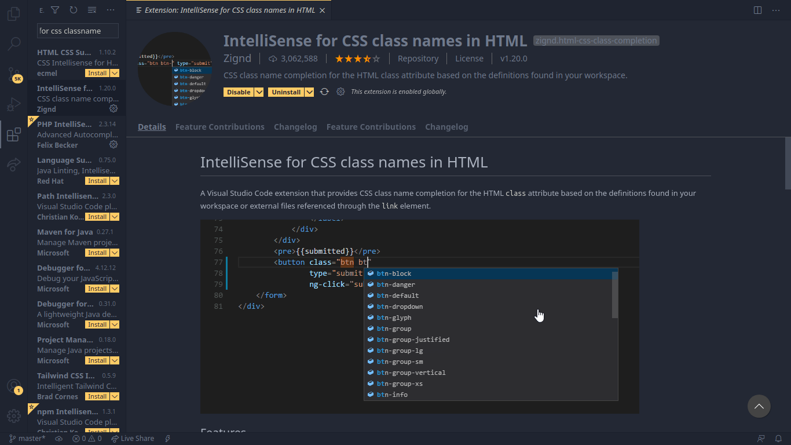
6. CSS Peek => kebalikan extension
IntelliSense for CSS class names in HTML, extension
ini digunakan untuk mengintip css apa? kalo css simple
langsung kelihatan. tapi kalo banyak ngga kelihatan tapi
kalo di klik dia langsung masuk ke definisi nya.
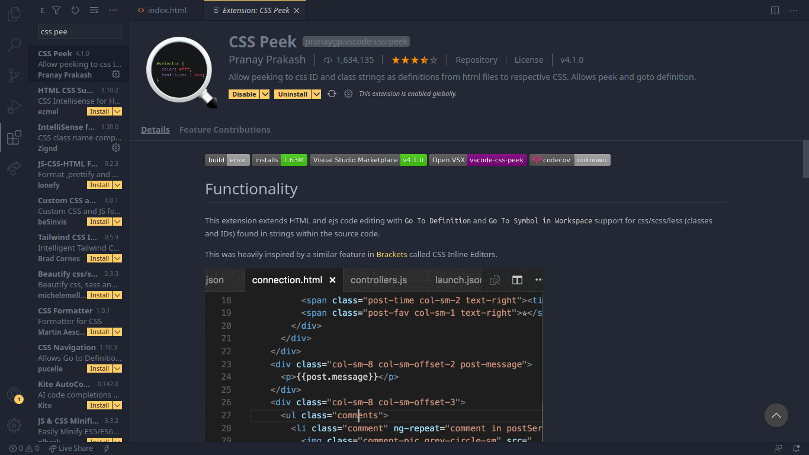
7. indent-rainbow => sangat membantu ketika
kita membuat halaman terutama html ya. Cobain deh
temen-temen.
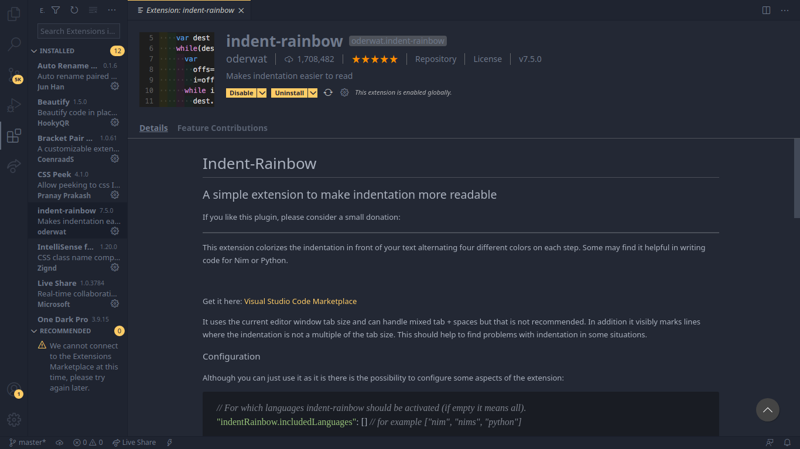
8. Bracket Pair Colorizer => hampir mirip
dengan indent rainbow, tapi ini untuk kurung kurawal, jadi
kalo kita misal ngoding php atau js, kadang kita membuat
banyak kurung kurawal ya., jadi dia memewarnai kurung
kurawal nya. dan warna nya berpasangan.
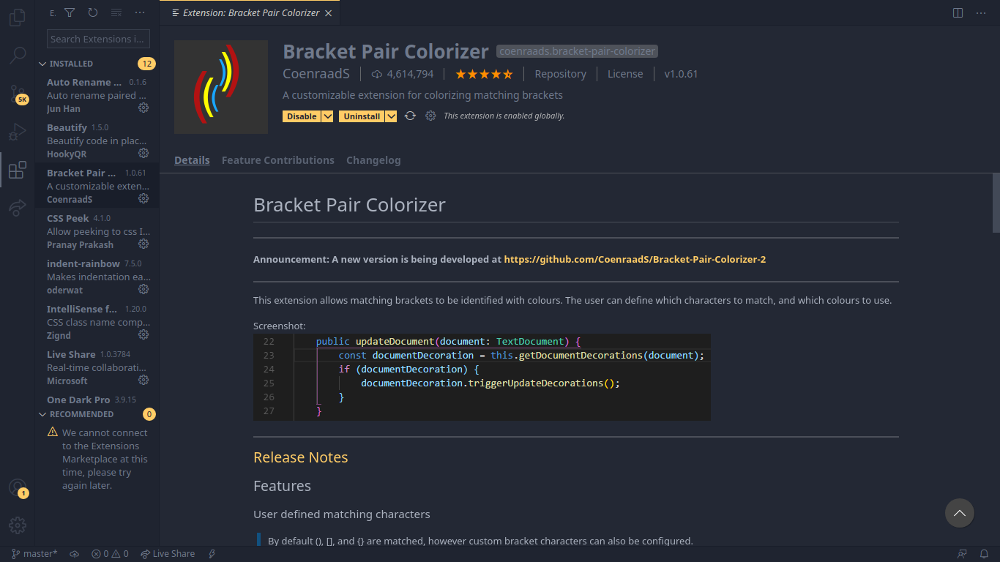
9. Beautify => untuk membantu formatting
koding kita, maka nanti kode nya akan otomatis di formatkan,
format nya bisa kalian bikin sendiri atau menggunakan format
yg sudah ada didalam beautify nya. Tapi ini ada setting yang
harus dilakukan.
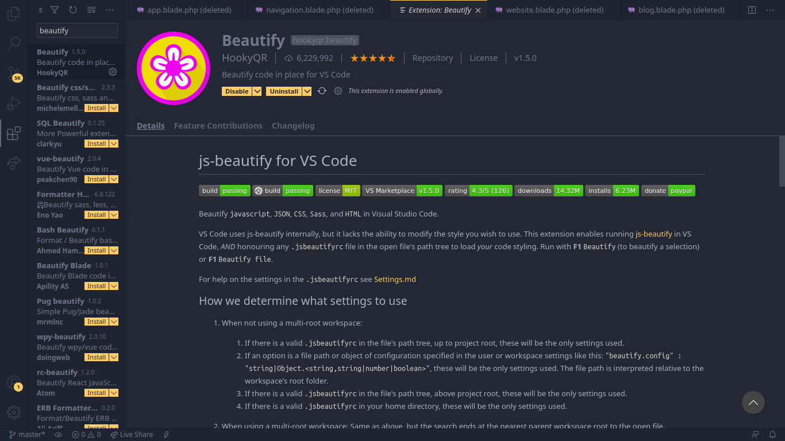
10. PHP IntelliSense => ketika temen temen
ngetik sesuatu, keluar autocomplate nya.
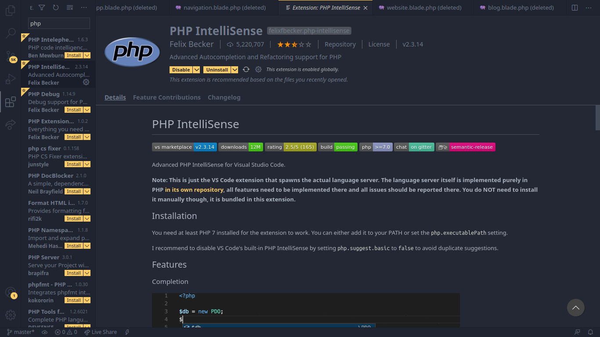
*Bonus*
One Dark Pro tema yang paling populer di gunakan di vs
code, kalo temen-temen tau ada sebuah kode editor
namanya atom yang skema warna nya banyak yang suka dan
di vs code ini kita bisa install tema atom itu ke dalam
vs code nya.
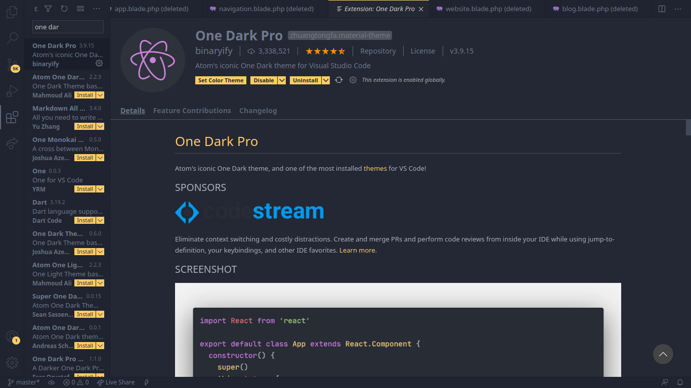